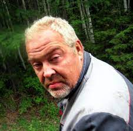
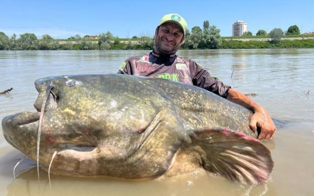
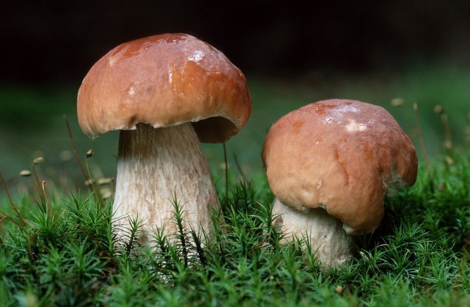

Я Петрович. Хто хоче зі мною зіграти в партейку то пишіть мені. Я відповідаю в 13:00. А як хто хоче з салом на рибалку то пишіть в 19:00

#СамЗловив #Рибак #Профі #Риба #ПетровичТоп
Там на фото то я просто трохи я тодій підстригcя тому не пишіть мені шо то не я. Там навіть по бородавці видно. А так то я зловив карася, та якщо ви не знали то то карась

#Гриби #Грибник #ПетровичТоп #СамЗбирав
Вот такі класні гриби я нашов. Щоб вам тоже такі гриби попадалися то ставте лайки. Вот вам кстаті місце де я шукав то кароче ідете на право від моєї хати і там буде такий дріт, перелазите через забор і ідете до великого дерева далі крутитися на місці, потім зупиняєтеся і в яку сторону дивитися туда ідіть там гриби
Всього за 99 Гривень, 99 копійок, і пів рубанця Петрович роскаже де знаходити гриби із шансом 99.98998899199%!!!